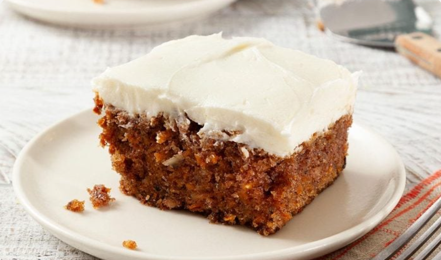

Ingredients:
Directions:
Step 1:
Preheat oven to 350°. Grease a 13x9-in. baking pan.
Step 2:
In a large bowl, beat eggs, sugar, oil and vanilla until well blended. In another bowl, whisk flour, baking soda, spices and salt; gradually beat into egg mixture. Stir in sweet potatoes and walnuts.
Step 3:
Transfer to prepared pan. Bake until a toothpick inserted in center comes out clean, 40-45 minutes. Cool completely in pan on a wire rack.
Step 4:
In a small bowl, beat cream cheese, butter and vanilla until blended. Gradually beat in confectioners’ sugar until smooth. Spread over cooled cake. Refrigerate leftovers.
Step 1:
Preheat oven to 350°. Grease a 13x9-in. baking pan.
Step 2:
In a large bowl, beat eggs, sugar, oil and vanilla until well blended. In another bowl, whisk flour, baking soda, spices and salt; gradually beat into egg mixture. Stir in sweet potatoes and walnuts.
Step 3:
Transfer to prepared pan. Bake until a toothpick inserted in center comes out clean, 40-45 minutes. Cool completely in pan on a wire rack.
Step 4:
In a small bowl, beat cream cheese, butter and vanilla until blended. Gradually beat in confectioners’ sugar until smooth. Spread over cooled cake. Refrigerate leftovers.

Nutritions: